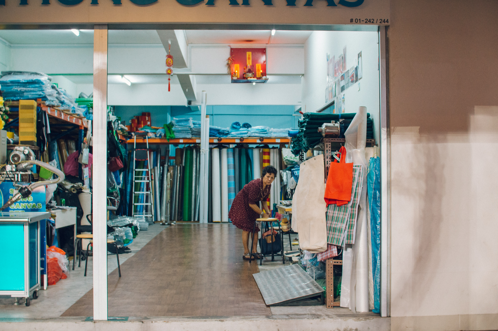
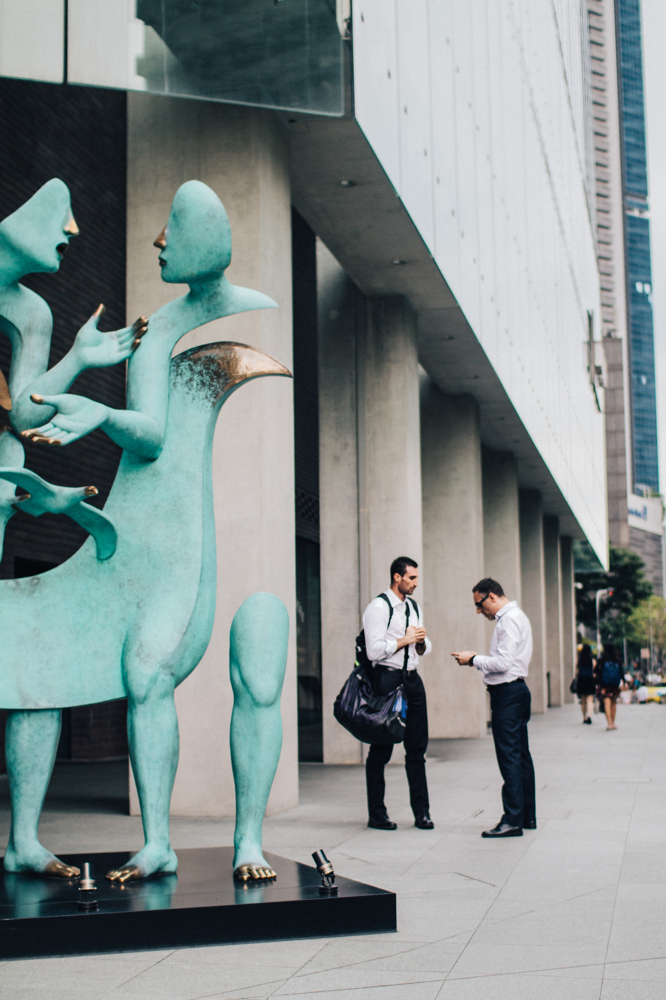
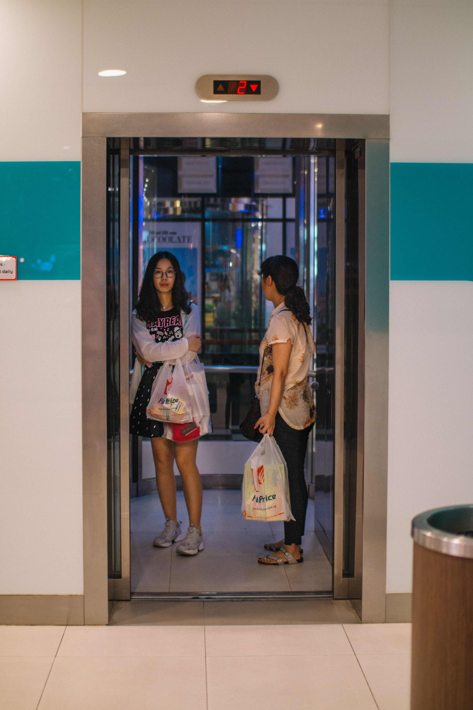
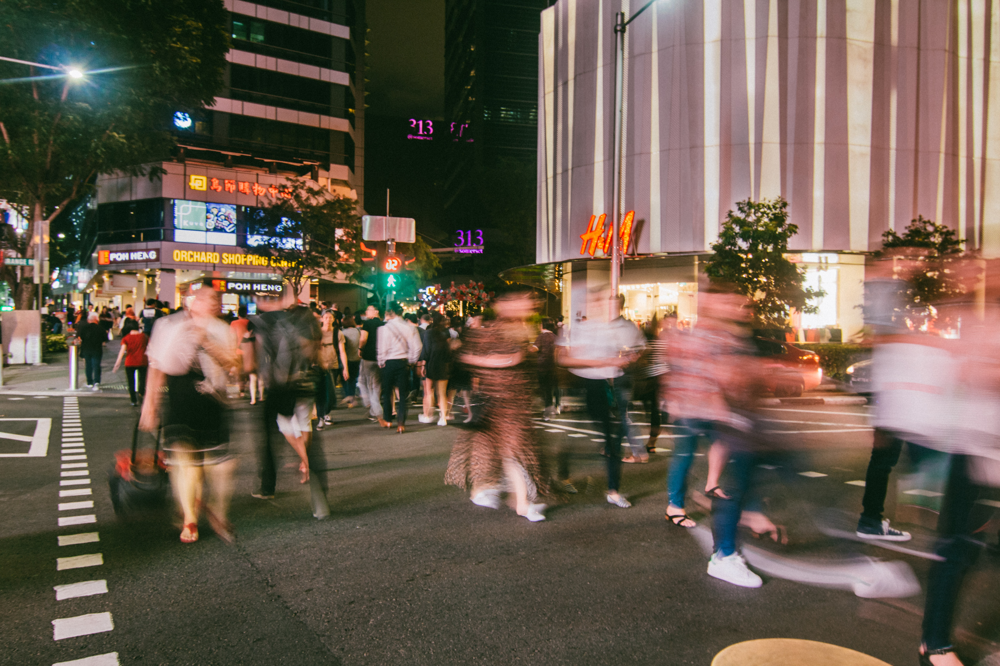
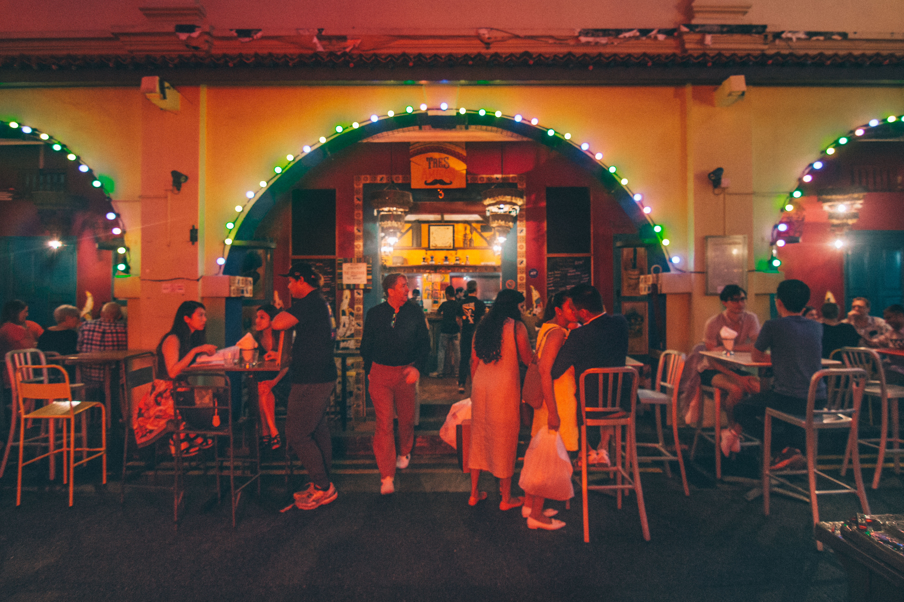
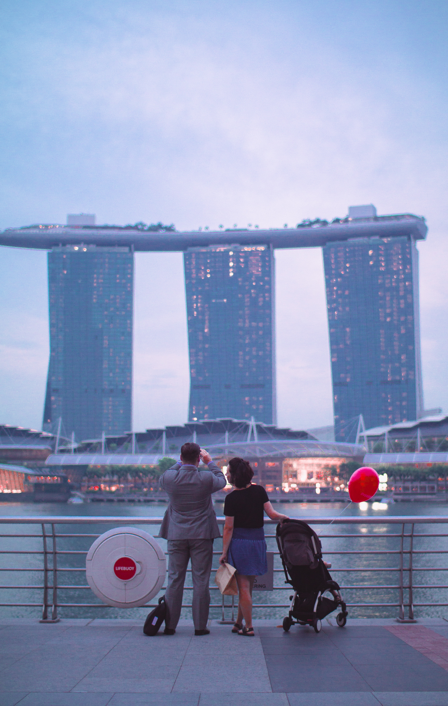
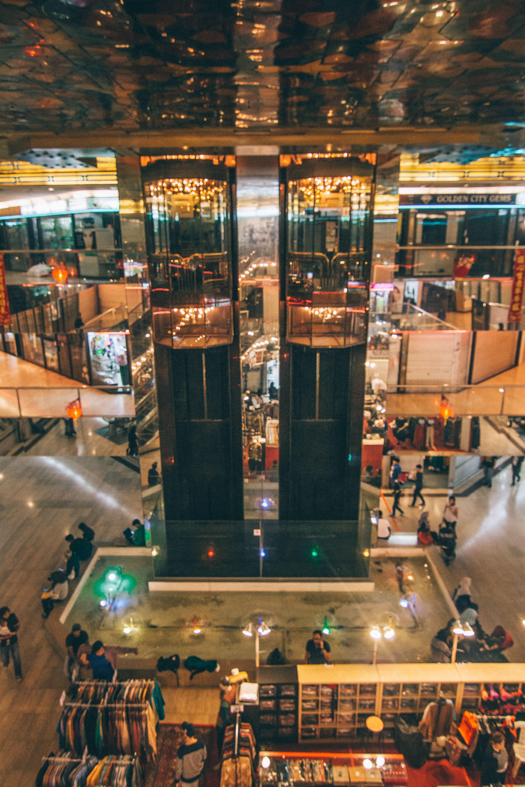
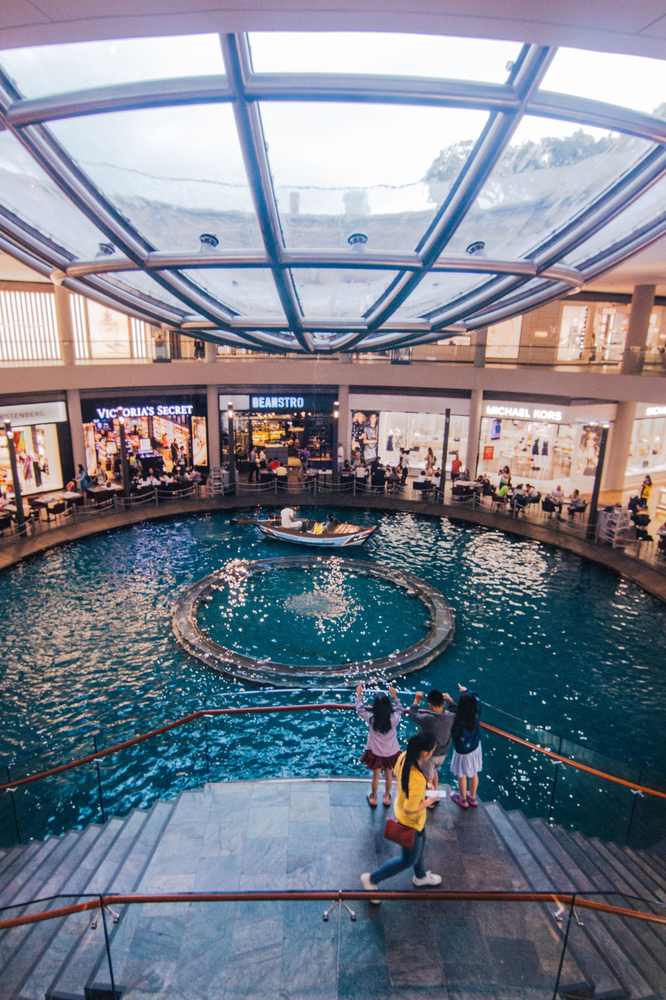
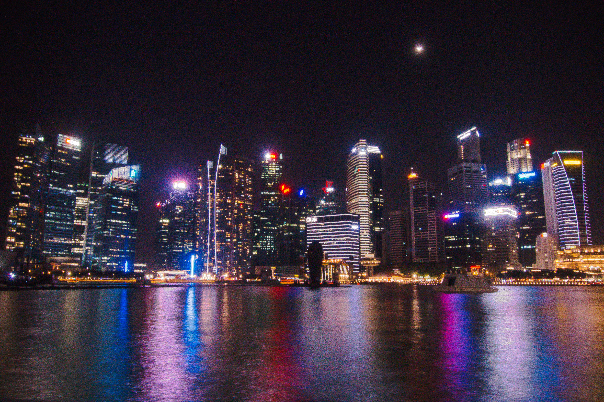

(Above) An old lady crouches to retrieve her bag as she prepares to close the fabric shop after a long day.
(Below) The streets of Orchard are restless, with cars zooming by at every green light.
(Above) Haw Par Villa, once a popular theme park famous for its depictions of 10 Courts of Hell, is devoid of life.
(Below) The Prudential Marina Bay Carnival sparkles in the night sky.
(Above) A Chinese herbal shop selling an array of dried goods and groceries.
(Below) A child looks around the shelves of a supermarket that are stocked with cans of food.

(Left) Two elderly men have a quick chat outside a closed store.
(Right) White-collar workers engage in conversation after work.

(Left) An eldery man waits for the lift at a HDB void deck.
(Right) Two women enter a lift at a shopping mall, carrying bags of groceries.

(Above) An elderly lady takes a stroll around the quiet neighbourhood with the aid of her walking stick.
(Below) e city is perpetually throbbing with life, with streams of people entering mall after mall.
(Above) A boy cycles by a block of colourful ats as heavy rain clouds loom close.
(Below) Masses of glass and steel stretch into the clear sky.

(Above) Two elderly men walk past a restful HDB carpark on a Friday night.
(Below) Loud music plays from the rows of crowded bars at Arab Street on a Friday night.
(Above) A makeshift tent with altars and stages is set up for worshippers to usher in the new year.
(Below) Chinese New Year decorations are being set up outside an o ce building.

(Left) Two boys huddle beneath an umbrella, enjoying the display of colourful automated toys.
(Right) A family stops to admire the cityscape, snapping pictures of the state-of-the-art architecture.
(Left) A bag of coffee hangs o a nail hammered into a HDB block’s pillar.
(Right) A takeaway coffee cup sits on a table in a crowded Starbucks outlet.
(Above) An old man takes a smoke break outside Amoy Street Food Centre.
(Below) Patrons enjoy their meals in an air-conditioned food court.
(Above) A man dangles his bare feet while smoking a cigarette.
(Below) Working adults flock to the train station after work, descending on escalators.


(Left) Several people sit around the water feature in Golden Landmark Shopping Complex. (Right) rilled children gather to watch the Sampan ride along The Shoppe’s canal.

(Above) Two men walk along the street of old shophouses.(Below) The dim sky is lit with bright lights from tall skyscrapers.